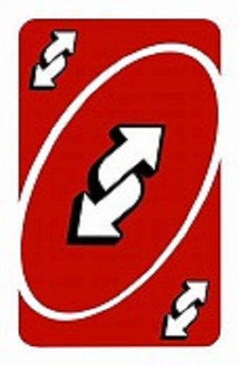

Twitter BotPlatform: Twitter |
|---|
Description |
| This Twitter bot was the first bot I developed to interact with a social media site. It was primarily to welcome new followers and play a simple game of rock, paper, scissors. It is no longer running today since it is dated and needs to be refactored. You can find the link to the Twitter bot's github repository here. |

Reversal BoiPlatform: Tik Tok |
|---|
Description |
| This bot was inspired by the Tik Tok trend of publishing videos with interesting backwards sounds and/or videos to accompany them. This bot is meant to be used to easily reverse the video that was posted so that users do not have to go through the troubles and tribulations of doing it themselves. This bot is not finished, but a link to it's repository will be posted here once complete. |
Group Rules BotPlatform: GroupMe |
|---|
Description |
| This bot is being developed to manage and administrate a group of mine within the service 'GroupMe'. Its purpose is to filter out messages that go against the group rules such as cursing or using derogatory language. It also serves to provide reminders for various events and schedules. This bot is not finished, but a link to it's repository will be posted here once complete. |